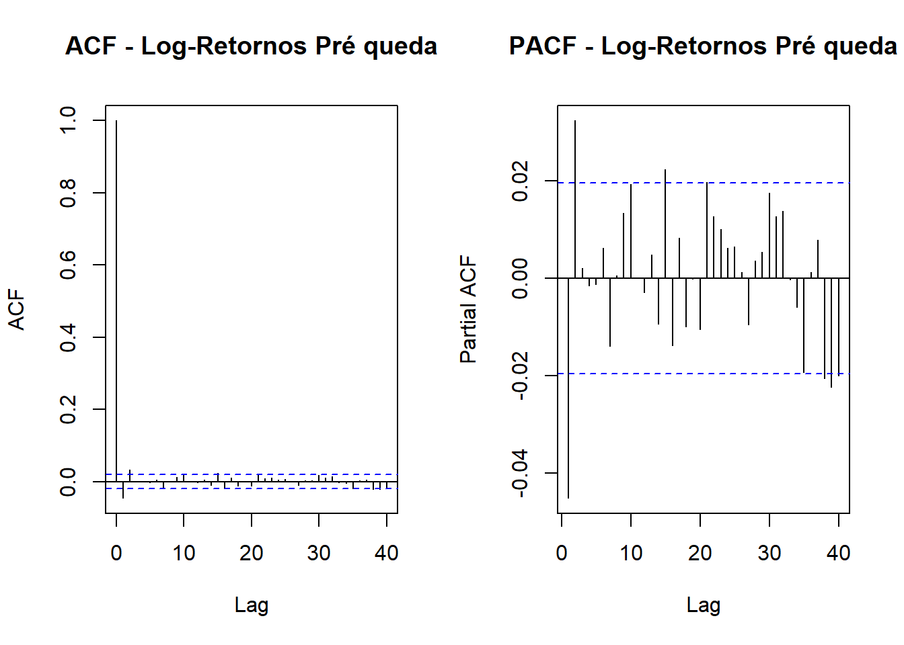
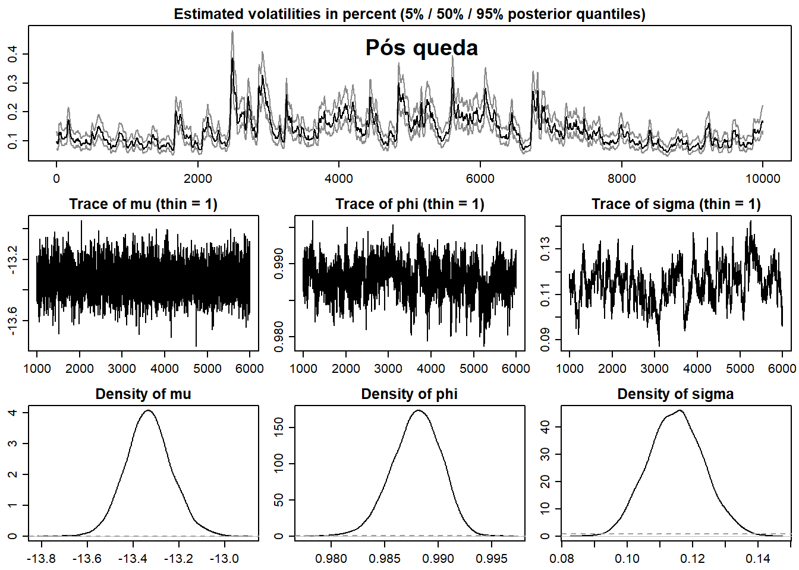
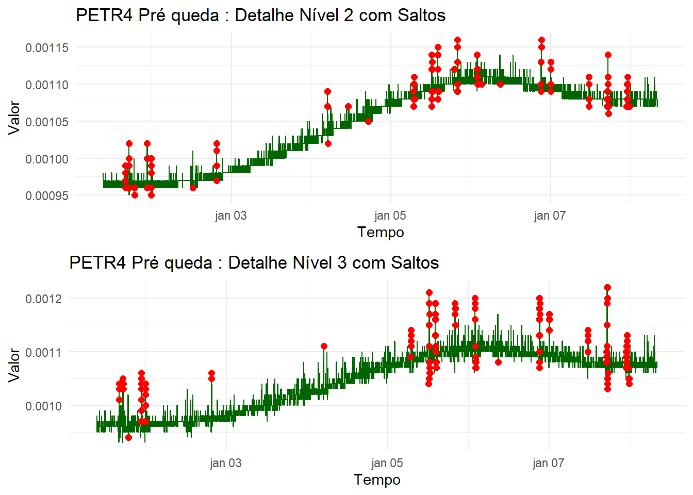
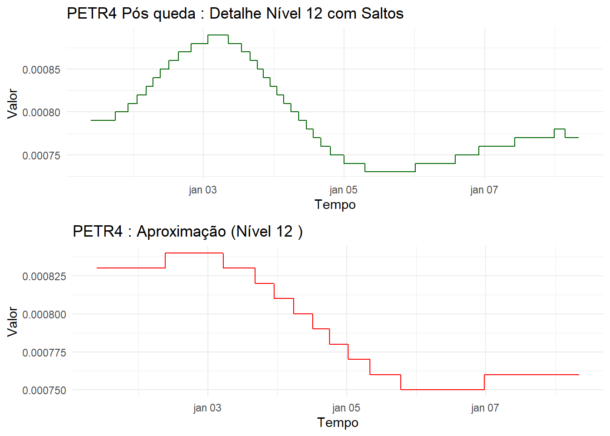

os <- Sys.info()["sysname"]
if(os == "Windows") {
dt.intra <- read.csv("D:/Code/R_studio/Petr4_ana/dt_1min_PETR4_2021_metatrader.csv",
header = TRUE, stringsAsFactors = FALSE,
sep = ";", dec = ",")
} else if(os == "Linux") {
dt.intra <- read.csv("~/Documentos/Coding/Statistics_in_R/Petr4_ana/dt_1min_PETR4_2021_metatrader.csv",
header = TRUE, stringsAsFactors = FALSE,
sep = ";", dec = ",")
}
dt1 <- as_tibble(dt.intra) %>%
mutate(Period = ymd_hms(X)) %>%
select(-X) %>%
filter(!(hour(Period) == 10 & minute(Period) < 20)) %>%
filter(hour(Period) < 17) %>%
filter(!(hour(Period) == 16 & minute(Period) > 54)) %>%
filter(!(date(Period) == "2021-02-17")) %>%
arrange(Period)
ret.1min <- as.xts(dt1$Ret.1min, order.by = dt1$Period)Análise de Volatilidade Estocástica e Retornos Intradiários - PETR4
Introdução
Este relatório explora o comportamento da volatilidade e dos retornos da ação PETR4 ao longo de 2021, com dados de frequência de 1 minuto extraídos da plataforma MetaTrader. Utilizamos modelos de volatilidade estocástica via stochvol, comparações com volatilidade realizada, e examinamos propriedades de clustering de volatilidade.
Leitura e Pré-processamento dos Dados
- Remoção de janelas de abertura com menor liquidez (10:00 até 10:20) e dos últimos minutos de pregão (após 16:55).
- Exclusão do feriado em 17/02/2021.
- Conversão para série temporal (
xts) e remoção de outliers extremos substituindo-os pela observação anterior.
Observação inicial
plot(ret.1min, main="PETR4 Retornos 1min", col="black")
boxplot(as.double(ret.1min), main="Boxplot dos Retornos 1min")
Identificação e remoçãode Outliers
Observamos os Outliers presentes nos valores maximos e minimos dos retornos. Com isso os removemos observamos novamente os gráficos de boxplot e a série temporal.
warning=FALSE
message=FALSE
# Teste ADF e visualizações iniciais
par(mfrow=c(1,1))
# Identificar outliers
idx_min <- which.min(as.double(ret.1min))
idx_max <- which.max(as.double(ret.1min))
# Substituir outliers pela observação anterior
ret.1min[idx_min] <- ret.1min[idx_min - 1]
ret.1min[idx_max] <- ret.1min[idx_max - 1]
plot.ts(ret.1min)
boxplot(as.double(ret.1min))
Testes de Estacionariedade
tseries::adf.test(ret.1min)Warning in tseries::adf.test(ret.1min): p-value smaller than printed p-value
Augmented Dickey-Fuller Test
data: ret.1min
Dickey-Fuller = -34.447, Lag order = 35, p-value = 0.01
alternative hypothesis: stationaryResultado mostra que os retornos são estacionários, o que é esperado para séries de retornos.
Analises de têndencias pré e pós queda
dados_xts <- xts(dt1[, c("Close.1min", "Ret.1min")], order.by = dt1$Period)
idx_min <- which.min(as.double(ret.1min))
idx_max <- which.max(as.double(ret.1min))
dados_xts[idx_min] <- dados_xts[idx_min - 1]Warning in NextMethod(.Generic): número de itens a substituir não é um múltiplo
do comprimento do substituto dados_xts[idx_max] <- dados_xts[idx_max - 1]Warning in NextMethod(.Generic): número de itens a substituir não é um múltiplo
do comprimento do substituto p2 = idx_min +10000dados_xts$LogRet.1min <- log(1 + dados_xts$Ret.1min)
dados_xts <- na.omit(dados_xts)
calc_volatilidade_historica <- function(retornos, janela = 21) {
vol_hist <- rollapply(retornos, width = janela,
FUN = function(x) sd(x, na.rm = TRUE),
by.column = TRUE,
align = "right")
return(vol_hist)
}
dados_xts$Vol_Hist_30min <- calc_volatilidade_historica(dados_xts$LogRet.1min, janela = 30)
minutos_ano <- 252 * 390
dados_xts$Vol_Anual <- dados_xts$Vol_Hist_30min * sqrt(minutos_ano)
volhist30min=dados_xts$Vol_Hist_30min
plot(volhist30min[1:10000], main = "Volatilidade (Janela 30 min) Pré queda", xlab = "Data", ylab = "Volatilidade")
plot(volhist30min[idx_min:p2], main = "Volatilidade (Janela 30 min) Pós queda", xlab = "Data", ylab = "Volatilidade")
warning=FALSE
message=FALSE
log_ret_vec <- as.numeric(dados_xts$LogRet.1min)
ret_vec <- as.numeric(dados_xts$Ret.1min)
# Visualizando ACF e PACF
par(mfrow = c(1, 2))
acf(log_ret_vec[1:10000], main = "ACF - Log-Retornos Pré queda", na.action = na.pass)
pacf(log_ret_vec[1:10000], main = "PACF - Log-Retornos Pré queda", na.action = na.pass)
par(mfrow = c(1, 2))
acf(log_ret_vec[idx_min:p2], main = "ACF - Log-Retornos Pós queda", na.action = na.pass)
pacf(log_ret_vec[idx_min:p2], main = "PACF - Log-Retornos Pós queda", na.action = na.pass)1. Objetivos
Comparação das as funções de autocorrelação (ACF) e autocorrelação parcial (PACF) dos log-retornos intradiários de PETR4 antes e depois de uma queda da opção.
Ajuste do Modelo de Volatilidade Estocástica
Ajustamos um modelo svsample() a dois blocos temporais:
- Primeiros 10000 pontos antes do maior retorno absoluto negativo.
- 10000 pontos após o menor retorno (queda abrupta) para comparar regimes.
- 15000 pontos após analise anterior 10000 mil pontos são analisados para observar a recuperação do mercado a uma queda bruta.
plot(sv_fit, showobs = FALSE)
title(main = "Pré queda")
plot(sv_fit2, showobs = FALSE)
title(main = "Pós queda")
plot(sv_fit3, showobs = FALSE)
title(main = "Recuperação Pós queda")Analisando os dados pós e pré queda da bolsa podemos ver uma mudança principalmente nas distribuições normais de Mu, Phi e Sigma, onde podemos definir o que cada variavel nos diz como:
Interpretação de μ (mu)
Média de longo prazo
μ define o valor médio ao qual Log-volatilidade reverte em longo prazo.
Processos com μ maior indicam que, em média, a volatilidade tende a ficar mais elevada.
“Drift” da volatilidade latente
Atua como termo constante que “puxa” o nível de volatilidade de volta ao seu ponto de equilíbrio
Ao estimar o modelo, a média pontual de μ na distribuição posterior corresponde à média aritmética.
Interpretação de φ (phi)
Persistência (autoregressão)
φ atua como coeficiente AR(1) medindo a “memória” da volatilidade.
Se φ≈1, choques em ht−1 têm efeito duradouro, resultando em clusters de volatilidade.
Estacionaridade
O modelo é estacionário somente se ∣ϕ∣<1; valores absolutos acima quebram a estabilidade do processo latente.
Estimações típicas em mercados emergentes mostram φ entre 0.95 e 0.99, indicando alta persistência.
Interpretação de σ (sigma)
Volatilidade da volatilidade
σ é o desvio-padrão dos choques que afetam o processo de log-volatilidade
Quanto maior σ, mais pronunciadas são as flutuações de curto prazo na volatilidade.
Incerteza dinâmica
Reflete a variabilidade intrínseca na evolução da volatilidade latente, controlando a rapidez das mudanças de regimes.
Modelos com σ elevado tendem a capturar melhor eventos extremos (fat tails) e mudanças bruscas no risco.
O que podemos retirar das nossas observações
Em particular, μ é a média de longo prazo da log-volatilidade, φ mede a persistência ou “memória” do processo, e σ quantifica a volatilidade da própria volatilidade.
Valores Estimados
| Regime | μ | φ | σ |
|---|---|---|---|
| Pré-queda | –13.8 | 0.97 | 0.16 |
| Pós-queda | –13.3 | 0.99 | 0.12 |
| Recuperação | –14.4 | 0.98 | 0.11 |
Interpretação dos Parâmetros
1. μ — Nível Médio de Longo Prazo
- Pré-queda (μ ≃ –13.8): Nível médio moderado de log-volatilidade, indicando um mercado relativamente estável antes do choque.
- Pós-queda (μ ≃ –13.3): Aumento em μ sinaliza que a volatilidade média se elevou após o choque, refletindo comportamento mais errático e risco incrementado.
- Recuperação (μ ≃ –14.4): μ abaixo do nível pré-queda sugere um período de calmaria, com volatilidade média inferior ao patamar inicial
2. φ — Persistência (AR(1))
- Pré-queda (φ ≃ 0.97): Choques de volatilidade perduram vários minutos, caracterizando clusters de volatilidade típicos em séries financeiras.
- Pós-queda (φ ≃ 0.99): Persistência extrema, indicando que o impacto do choque permanece durante longo período e reduz a capacidade de “esquecer” choques passados.
- Recuperação (φ ≃ 0.98): Alta persistência, porém ligeiramente menor que no pós-queda, sinalizando retorno gradual a um regime menos grudado em choques passados.
3. σ — Volatilidade da Volatilidade
- Pré-queda (σ ≃ 0.16): Flutuações bruscas no nível latente de volatilidade, revelando instabilidade moderada na variância do processo.
- Pós-queda (σ ≃ 0.12): Apesar do regime mais volátil, a dispersão das mudanças na volatilidade latente diminui, indicando choques relativamente menos extremos no pós-queda.
- Recuperação (σ ≃ 0.11): Processo de volatilidade ainda mais estável, com menor amplitude de flutuações, corroborando o retorno a um regime de baixa incerteza.
Concluindo
A análise dos parâmetros μ, φ e σ em diferentes regimes pós-queda revela mudanças profundas na dinâmica de risco de PETR4. Antes do choque, o mercado apresentava volatilidade moderada com alta instabilidade no processo latente. Após a queda, o aumento de μ e φ combinados com menor σ pautam um regime de alta persistência e volatilidade média elevada, porém com choques menos extremos. Na fase de recuperação, todos os parâmetros retornam a patamares de menor incerteza, indicando estabilização do mercado. Essas informações são cruciais para aprimorar modelos de previsão e estratégias de hedge em opções intradiárias.
Comparação de volatilidades
Criaremos o mesmo segmento utilizados acima como:
Segmento A: Valores de 1 a 10000 observações antes da queda brusca.
Segmento B: valores de 11600 a 22600 (2000 valores antes da queda e a queda em si).
Segmento C: valores de 33600 a 43600 observando a volatilidade do mercado semanas após a queda.
Iremos comparar a volatilidade realizada desses pontos para entender como era uma função pré, durante e pós uma queda brusca no mercado.
rets <- dt1$Ret.1min
segments <- list(
A = 1:10000,
B = 11600:22600,
C = 33600:43600
)
vol_list <- lapply(names(segments), function(seg_name) {
idx <- segments[[seg_name]]
r_seg <- rets[idx]
vol_acum <- sqrt(cumsum(r_seg^2))
data.frame(
index = idx,
vol = vol_acum,
segment = seg_name
)
})
df_vol <- bind_rows(vol_list)
ggplot(df_vol, aes(x = index, y = vol, color = segment)) +
geom_line() +
labs(
title = "Volatilidade Realizada Acumulada por Segmento de Índices",
x = "Índice",
y = "Volatilidade Realizada",
color = "Segmento"
) +
theme_minimal()
rets <- dt1$Ret.1min
segments <- list(
A = 1:10000,
B = 11600:22600,
C = 33600:43600
)
vol_list2 <- lapply(names(segments), function(seg_name) {
idx <- segments[[seg_name]]
vol <- sqrt(rets[idx]^2)
data.frame(index = idx, vol = vol, segment = seg_name)
})
df_vol_inst <- bind_rows(vol_list2)
plot_segment <- function(df, seg_name) {
df_sub <- df %>% filter(segment == seg_name)
ggplot(df_sub, aes(x = index, y = vol)) +
geom_line() +
labs(
title = paste0("Volatilidade Realizada – Segmento ", seg_name),
x = "Índice",
y = "Volatilidade Realizada (|Retorno|)"
) +
ylim(0, 0.02)+
theme_minimal()
}
plot_A <- plot_segment(df_vol_inst, "A")
plot_B <- plot_segment(df_vol_inst, "B")
plot_C <- plot_segment(df_vol_inst, "C")
plot_A 
plot_B plot_C h_mcmc <- sv_fit$latent[[1]]
h_mat <- as.matrix(h_mcmc)
dim(h_mat) [1] 10000 10000h_mean <- colMeans(h_mat)
vol_est <- exp(h_mean / 2)
time_index <- seq(
from = as.POSIXct("2021-01-01 09:31"),
by = "1 min",
length.out = length(vol_est)
)
h_mcmc <- sv_fit2$latent[[1]]
h_mat <- as.matrix(h_mcmc)
dim(h_mat) [1] 5000 10001h_mean <- colMeans(h_mat)
vol_est2 <- exp(h_mean / 2)
time_index2 <- seq(
from = as.POSIXct("2021-01-01 09:31"),
by = "1 min",
length.out = length(vol_est2)
)
h_mcmc <- sv_fit3$latent[[1]]
h_mat <- as.matrix(h_mcmc)
dim(h_mat) [1] 5000 10001h_mean <- colMeans(h_mat)
vol_est3 <- exp(h_mean / 2)
time_index3 <- seq(
from = as.POSIXct("2021-01-01 09:31"),
by = "1 min",
length.out = length(vol_est3)
)
df_est <- data.frame(time = time_index, vol = vol_est)
df_est2 <- data.frame(time = time_index2, vol = vol_est2)
df_est3 <- data.frame(time = time_index3, vol = vol_est3)ggplot(df_est, aes(x = time, y = vol)) +
geom_line() +
labs(
title = "Volatilidade Estocástica (média posterior)",
x = "Tempo",
y = "σ̂_t"
) +
theme_minimal()
Decomposição MODWT
Transformada: MODWT em 12 níveis, correspondente ao máximo suportado.
Onda‑mãe: Haar, por sua simplicidade e desempenho.
Interpretação: níveis de detalhe (d1, d4, d8, d12) mostram oscilações de alta frequência ligadas ao salto de 22/02/2021; níveis de baixa frequência evidenciam a tendência geral.
plot_wavelet_levels_modwt_hist <- function(df, levels = 12, df_name = "df_est") {
filter_type <- "haar"
max_possible_levels <- min(levels, floor(log2(nrow(df))))
modwt_result <- modwt(df$vol, n.levels = max_possible_levels, boundary = "reflection")
total_plots <- max_possible_levels + 2
plots_list <- vector("list", total_plots)
for (plot_idx in seq_len(total_plots)) {
if (plot_idx == 1) {
plots_list[[plot_idx]] <- ggplot(df, aes(x = time, y = vol)) +
geom_line(color = "blue") +
labs(title = paste(df_name, ": Série Original"), x = "Tempo", y = "Volatilidade") +
theme_minimal()
} else if (plot_idx == total_plots) {
approx_modwt <- modwt_result
for (j in seq_len(max_possible_levels)) approx_modwt@W[[j]][] <- 0
approximation <- imodwt(approx_modwt)
df_plot <- data.frame(time = df$time, value = approximation)
plots_list[[plot_idx]] <- ggplot(df_plot, aes(x = time, y = value)) +
geom_line(color = "red") +
labs(title = paste(df_name, ": Aproximação (Nível", max_possible_levels, ")"),
x = "Tempo", y = "Valor") +
theme_minimal()
} else {
i <- plot_idx - 1
detail_modwt <- modwt_result
for (j in seq_len(max_possible_levels)) if (j != i) detail_modwt@W[[j]][] <- 0
detail_series <- imodwt(detail_modwt)
df_plot <- data.frame(time = df$time, value = detail_series)
plots_list[[plot_idx]] <- ggplot(df_plot, aes(x = time, y = value)) +
geom_line(color = "darkgreen") +
labs(title = paste(df_name, ": Detalhe Nível", i), x = "Tempo", y = "Valor") +
theme_minimal()
}
}
for (k in seq(1, length(plots_list), by = 2)) {
p1 <- plots_list[[k]]
p2 <- if ((k + 1) <= length(plots_list)) plots_list[[k + 1]] else NULL
if (!is.null(p2)) {
grid.arrange(p1, p2, nrow = 2)
} else {
print(p1)
}
}
invisible(plots_list)
}
plot_wavelet_levels_modwt_hist(df_est3, levels = 12, df_name = "PETR4")
plot_wavelet_levels_modwt_jumps <- function(df, levels = 15, df_name = "df_est", momento) {
filter_type <- "haar"
max_levels <- min(levels, floor(log2(nrow(df))))
modwt_res <- modwt(df$vol, filter = filter_type, n.levels = max_levels, boundary = "reflection")
total_plots <- max_levels + 2
plots <- vector("list", total_plots)
for (idx in seq_len(total_plots)) {
if (idx == 1) {
p <- ggplot(df, aes(x = time, y = vol)) +
geom_line(color = "blue") +
labs(title = paste(df_name, ": Série Original"), x = "Tempo", y = "Volatilidade") +
theme_minimal()
} else if (idx == total_plots) {
approx <- modwt_res
for (j in seq_len(max_levels)) approx@W[[j]][] <- 0
series_approx <- imodwt(approx)
df_a <- data.frame(time = df$time, value = series_approx[1:nrow(df)])
p <- ggplot(df_a, aes(x = time, y = value)) +
geom_line(color = "red") +
labs(title = paste(df_name, ": Aproximação (Nível", max_levels, ")"),
x = "Tempo", y = "Valor") +
theme_minimal()
} else {
i <- idx - 1
detail <- modwt_res
for (j in seq_len(max_levels)) if (j != i) detail@W[[j]][] <- 0
series_det <- imodwt(detail)
df_d <- data.frame(time = df$time, value = series_det[1:nrow(df)])
Wj <- modwt_res@W[[i]]
sigma_j <- median(abs(Wj), na.rm = TRUE) / 0.6745
thr_j <- sigma_j * sqrt(2 * log(length(Wj)))
jumps <- which(abs(Wj) > thr_j)
jumps <- jumps[jumps <= nrow(df)]
df_d$jumps <- NA
df_d$jumps[jumps] <- df_d$value[jumps]
p <- ggplot(df_d, aes(x = time, y = value)) +
geom_line(color = "darkgreen") +
geom_point(data = subset(df_d, !is.na(jumps)),
aes(x = time, y = jumps), color = "red", size = 2) +
labs(title = paste(df_name, momento, ": Detalhe Nível", i, "com Saltos"),
x = "Tempo", y = "Valor") +
theme_minimal()
}
plots[[idx]] <- p
}
for (k in seq(1, length(plots), by = 2)) {
p1 <- plots[[k]]
p2 <- if ((k+1) <= length(plots)) plots[[k+1]] else NULL
if (!is.null(p2)) {
grid.arrange(p1, p2, nrow = 2)
} else {
print(p1)
}
}
invisible(plots)
}plot_wavelet_levels_modwt_jumps(df_est, levels = 12, df_name = "PETR4", momento = "Pré queda")


plot_wavelet_levels_modwt_jumps(df_est2, levels = 12, df_name = "PETR4", momento = "Durante a queda")
plot_wavelet_levels_modwt_jumps(df_est3, levels = 12, df_name = "PETR4", momento = "Pós queda")
detect_jumps_modwt <- function(df, levels = 12) {
filter_type <- "haar"
max_levels <- min(levels, floor(log2(nrow(df))))
modwt_res <- modwt(df$vol, filter = filter_type, n.levels = max_levels, boundary = "reflection")
jump_indices_list <- vector("list", max_levels)
for (level in seq_len(max_levels)) {
Wj <- modwt_res@W[[level]]
sigma_j <- median(abs(Wj), na.rm = TRUE) / 0.6745
thr_j <- sigma_j * sqrt(2 * log(length(Wj)))
idx <- which(abs(Wj) > thr_j)
jump_indices_list[[level]] <- idx[idx <= nrow(df)]
}
list(modwt = modwt_res, jumps = jump_indices_list)
}
model_jump_intensity <- function(df, jump_list, window = "hour", df_name = "df_est",momento) {
intensity_plots <- list()
for (level in seq_along(jump_list)) {
idx <- jump_list[[level]]
if (length(idx) == 0) next
times <- df$time[idx]
df_counts <- data.frame(time = times) %>%
mutate(interval = floor_date(time, unit = window)) %>%
count(interval)
fit <- glm(n ~ 1, family = poisson, data = df_counts)
lambda_hat <- exp(coef(fit))
p <- ggplot(df_counts, aes(x = interval, y = n)) +
geom_bar(stat = "identity", fill = "steelblue") +
geom_hline(yintercept = lambda_hat, linetype = "dashed", color = "red") +
labs(title = paste(df_name, momento, ": Intensidade de Saltos - Nível", level),
subtitle = paste("Lambda estimado =", round(lambda_hat, 3)),
x = paste("Intervalo (", window, ")", sep = ""), y = "Contagem de Saltos") +
theme_minimal()
intensity_plots[[level]] <- p
}
plot_indices <- which(!sapply(intensity_plots, is.null))
for (k in seq(1, length(plot_indices), by = 2)) {
p1 <- intensity_plots[[plot_indices[k]]]
p2 <- if ((k+1) <= length(plot_indices)) intensity_plots[[plot_indices[k+1]]] else NULL
if (!is.null(p2)) {
grid.arrange(p1, p2, nrow = 2)
} else {
print(p1)
}
}
invisible(intensity_plots)
}res <- detect_jumps_modwt(df_est, levels = 12)
model_jump_intensity(df_est, res$jumps, window = "hour", df_name = "PETR4",momento = "Pré queda")res2 <- detect_jumps_modwt(df_est2, levels = 12)
model_jump_intensity(df_est2, res2$jumps, window = "hour", df_name = "PETR4",momento = "Durante a queda")res3 <- detect_jumps_modwt(df_est3, levels = 12)
model_jump_intensity(df_est3, res3$jumps, window = "hour", df_name = "PETR4",momento = "Pós queda")Descrição dos Dados
Para ilustrar a identificação de saltos em diferentes escalas, foi utilizada a série de preços da PETR4 (Petrobrás) no período de 04/01/2021 a 25/06/2021, com frequência de 1 minuto. A escolha deste ativo deve-se à sua alta liquidez e influência sobre o Ibovespa, além de um evento de queda acentuada em 22/02/2021, motivado pelo anúncio de troca de presidência da empresa.
Fonte: MetaTrader 5.
Período: 04/01/2021 a 25/06/2021 (119 dias, 49 611 observações).
Ajustes: remoção dos primeiros 19 minutos após abertura (10h20 em diante), para evitar ruídos de leilão de abertura.
Próximos Passos
- Como reproduzir a serie estocastica.
- Identificar saltos na serie estocastica limite universal.
- tentar deconpor em ondaleta se possivel a serie estocastica.